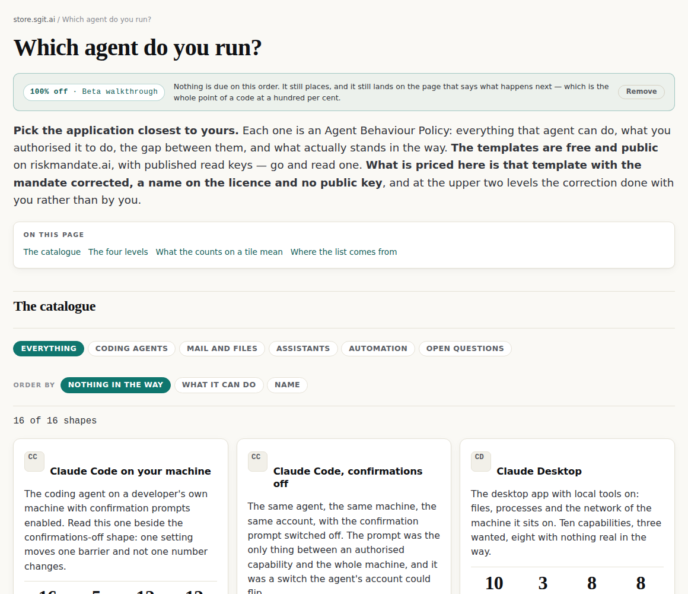
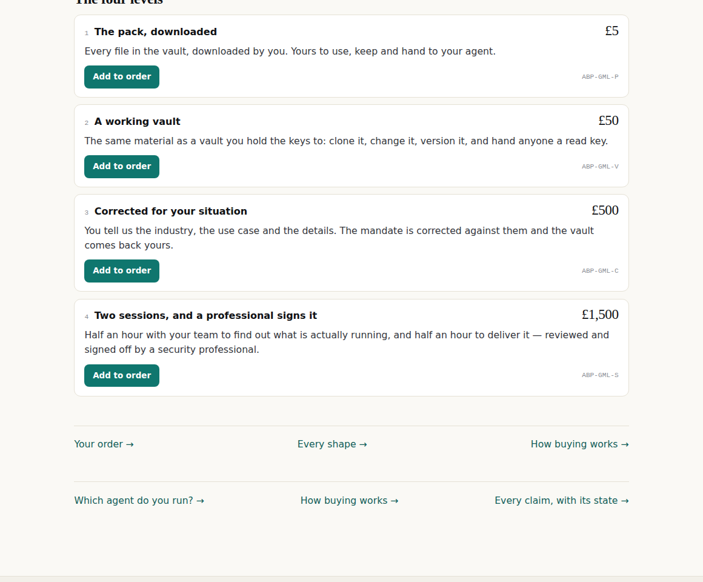
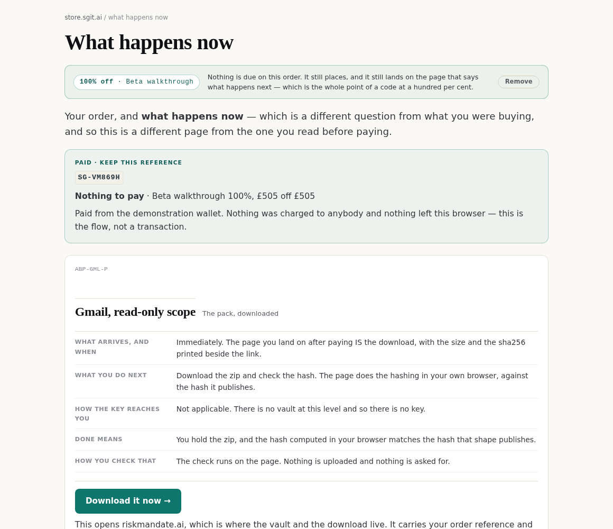

store.sgit.ai / lab / product
A product page, as a prototype
A prototype of a product page, not a product page.
Nothing on this page can be bought. This is a prototype of a product page, not a product page. Nothing on it can be bought, the button is disabled in the markup rather than by script, and whether this shape becomes the real one is not decided. specified, not built 11 Sep 2026
A level page argues about what a policy is. A product page shows the thing. Those are different documents and this store has only ever written the first. This is what the second would look like for Can I have a vault I hold the keys to?.
A working vault, for the shape you pick
The same material as the pack, as the thing itself: versioned, with its own app, and a read key you can hand to anybody who asks how you govern the agent.
For a founder: Speed and evidence, in that order. A founder needs the document to exist before the conversation that needs it, and needs it to survive being read by somebody more senior than them.
For an investor: Independence, and repeatability across a portfolio. The point is not that a document exists — it is that somebody who is not the founder wrote it and will stand behind it.
For a c-level exec: Who the document is written for. The material is the same; what an executive needs is the version that survives a board pack, and the store is explicit that this is being built rather than already sitting there.
For a security professional: Nothing is explained that you already know. What is worth your time here is the method and the fifteen published templates — and, if you run reviews, the list of people who run the upper two levels.
For risk and governance: The mapping, and what the store refuses to claim about it. Nothing here is a compliance assessment and nothing claims conformity to any standard — what exists is a document that can be cited a row of.
What it looks like
3 of 7 slots have a picture in them today. The rest say what belongs there.



Specifications
| Product code | ABP-T2 |
|---|---|
| What it is | One encrypted vault, licensed to you |
| Shapes to choose from | Fifteen published, plus a catch-all for anything not on the list |
| Delivered | 1 to 2 days from your payment |
| Licence | Commercial, to you. The same files are public under CC BY |
| Public key | Removed. Yours is not readable by anybody you have not handed a key to |
| Formats inside | Markdown and JSON, plus the two files you hand the agent |
| Needs an account | No. A vault is opened by its key and nothing else |
Reviews
There are none. This store has not asked anybody for one yet, and the plan is to give the work away in exchange for comment rather than to collect ratings. When they exist they will be dated and attributable, and there will be no star average — a number out of five on a product with four reviews is a decoration, not a measurement.
What is being judged here
Four things, and they are separable — any one of them could be right while the others are wrong.
Price, delivery and one action, held beside the material rather than under it. This is the part that is closest to settled, because it is what every shop does and the reason is the same everywhere: the decision and the evidence should be visible at the same time.
Seven slots, three with a picture. The empty ones are left visibly empty. A carousel padded with decoration would be the one dishonest thing on a page whose entire job is showing what you actually get — and it would also hide how much of this is still to do.
The product code, the licence, what is inside and what is not needed. A product has specs; this store has sixty-two product codes and prints none of them anywhere a buyer looks.
The five audiences as variants of one product rather than five separate paths — the same switch as who you are, arriving from the product side. Today it changes one sentence. The open question is whether it should change the pictures too, which is what would make it an edition rather than a label.
What it is missing, on purpose
Stars. Not asked for, and a rating out of five on a product nobody has bought would be the one piece of furniture here that could not be honest. The reviews section says it is empty and says what will fill it.
Most of the pictures. Named above rather than mocked up, because a slot that says what belongs in it is a piece of work somebody can do, and a placeholder image is a piece of work somebody will forget.
The other prototypes in the lab
Which agent do you run? → How buying works → Every claim, with its state →